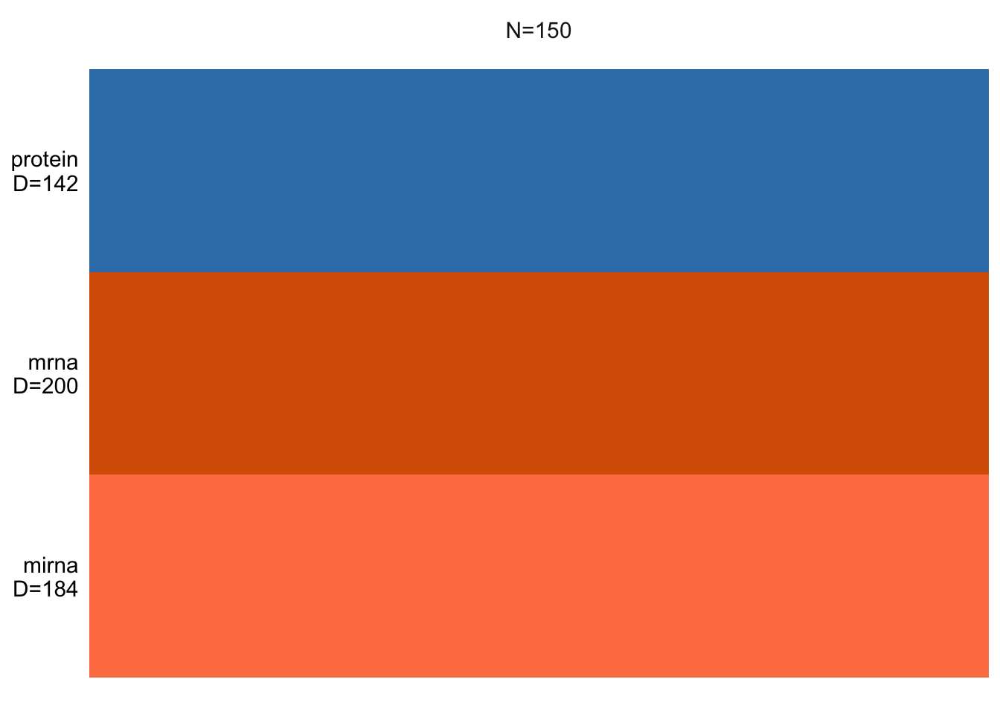

if (!requireNamespace("BiocManager", quietly = TRUE))
install.packages("BiocManager")
BiocManager::install("MOFA2")
# list of packages to be installed
packages <- c("ggplot2")
# check and install missing packages
new_packages <- packages[!(packages %in% installed.packages()[,"Package"])]
if(length(new_packages)) install.packages(new_packages, dependencies = TRUE, type = "binary")Setting up environment
You will need to install a few packages to fully run this notebook. The main packages needed are MOFA2 and ggplot2.
Introduction
In classical data integration, we would like to use information across different modalities (e.g. transcriptome, proteome and metabolome) to gain more comprehensive insights into the biological systems under study. This type of data can be used for an array of different purposes including but not limited to molecular classification, stratification of patients, outcome predictions and understanding of regulatory processes such as gene regulation and pathway analysis.
Here we are going to focus on unsupervised modeling and segmentation, which are promising because each type of omics data may contribute valuable information to the overall understanding of complex biological systems. By leveraging unsupervised modeling, we can uncover hidden patterns and relationships within the data without relying on predefined labels. This is especially beneficial when dealing with omics data, where the volume and complexity can be overwhelming. Furthermore, segmentation allows us to group similar data points, making it easier to identify and analyze specific subsets of the data. Given the heterogeneous nature of omics data, integrating multiple types can provide a more comprehensive view of the underlying biological processes.
In this lab we are going to learn how to use Multi-Omics Factor Analysis (MOFA) for multiple data views to uncover hidden but common pattern within the data.
Data
We will use TCGA data set from mixOmics, where features are in the columns and samples in the rows.
This data set is a small subset of the full data set from The Cancer Genome Atlas. It contains the expression or abundance of three matching omics data sets: mRNA, miRNA and proteomics for 150 breast cancer samples (with three molecular subtypes of breast cancer: Basal, Her2, Luminal A) in the training set, and 70 samples in the test set. The test set is missing the proteomics data set.
# download the dataset
download.file("https://github.com/mixOmicsTeam/mixOmics/raw/master/data/breast.TCGA.rda", destfile = "TCGA.rda")
# load the data
load("TCGA.rda")This data, when loaded, has already been split into a list with two elements: training and testing. The first element (training) contains four elements, again lists, containing miRNA, mRNA, proteomics and cancer molecular subtypes. The second element (testing) contains three lists holding miRNA, mRNA and molecular subtypes data (proteomics data are missing here).
# preview data
str(breast.TCGA)List of 2
$ data.train:List of 4
..$ mirna : num [1:150, 1:184] 11.8 12.9 12.3 12 13.4 ...
.. ..- attr(*, "dimnames")=List of 2
.. .. ..$ : chr [1:150] "A0FJ" "A13E" "A0G0" "A0SX" ...
.. .. ..$ : chr [1:184] "hsa-let-7a-1" "hsa-let-7a-2" "hsa-let-7a-3" "hsa-let-7b" ...
..$ mrna : num [1:150, 1:200] 4.36 1.98 1.73 4.36 2.45 ...
.. ..- attr(*, "dimnames")=List of 2
.. .. ..$ : chr [1:150] "A0FJ" "A13E" "A0G0" "A0SX" ...
.. .. ..$ : chr [1:200] "RTN2" "NDRG2" "CCDC113" "FAM63A" ...
..$ protein: num [1:150, 1:142] 0.0491 -0.08 -0.0328 -0.2053 0.0602 ...
.. ..- attr(*, "dimnames")=List of 2
.. .. ..$ : chr [1:150] "A0FJ" "A13E" "A0G0" "A0SX" ...
.. .. ..$ : chr [1:142] "14-3-3_epsilon" "4E-BP1" "4E-BP1_pS65" "4E-BP1_pT37" ...
..$ subtype: Factor w/ 3 levels "Basal","Her2",..: 1 1 1 1 1 1 1 1 1 1 ...
$ data.test :List of 3
..$ mirna : num [1:70, 1:184] 12.8 13.9 12.9 12.4 13.1 ...
.. ..- attr(*, "dimnames")=List of 2
.. .. ..$ : chr [1:70] "A54N" "A2NL" "A6VY" "A3XT" ...
.. .. ..$ : chr [1:184] "hsa-let-7a-1" "hsa-let-7a-2" "hsa-let-7a-3" "hsa-let-7b" ...
..$ mrna : num [1:70, 1:200] 1.19 2.73 3.05 2.7 3.14 ...
.. ..- attr(*, "dimnames")=List of 2
.. .. ..$ : chr [1:70] "A54N" "A2NL" "A6VY" "A3XT" ...
.. .. ..$ : chr [1:200] "RTN2" "NDRG2" "CCDC113" "FAM63A" ...
..$ subtype: Factor w/ 3 levels "Basal","Her2",..: 1 1 1 1 1 1 1 1 1 1 ...Data integration using MOFA2
MOFA is a factor analysis model that provides a general framework for the integration of multi-omic data sets in an unsupervised fashion. Intuitively, MOFA can be viewed as a versatile and statistically rigorous generalization of principal component analysis to multi-omics data. Given several data matrices with measurements of multiple -omics data types on the same or on overlapping sets of samples, MOFA infers an interpretable low-dimensional representation in terms of a few latent factors. These learnt factors represent the driving sources of variation across data modalities, thus facilitating the identification of cellular states or disease subgroups.
Let’s use our omics data, mRNA, miRNA and proteome to create a low-dimensional representation based on the variation across the three modalities. To do that, we will need to build and train MOFA object. After that, in downstream analysis we can use the MOFA model to visualize and interpret the model output, e.g. to learn how much variance is explained by the individual omics for the new latent factors or find out which features relate most (have strongest features weights) to the latent factors.
Building a MOFA object
To create a MOFA object you need to specify three dimensions: samples, features and view(s). Views(s) are the different omics types in our case. MOFA object can be created based on many different data formats such as a list of matrices, a long data.frame, MultiAssayExperiment or even Suerat objects for single-cell genomics data. Here, we will use a list of matrices as our TCGA data is already in this format.
# load library
library(MOFA2)
# remove the subtype information from training data
data_mofa <- breast.TCGA$data.train[-4]
# transpose data because MOFA wants features in rows
data_mofa <- lapply(data_mofa, t)
# create MOFA object
MOFAobject <- create_mofa(data_mofa)
## Creating MOFA object from a list of matrices (features as rows, sample as columns)...We can have a look at the structure of the input data:
plot_data_overview(MOFAobject)
This shows us how many samples we have and how many features per data view is there. If there were missing values, these would be shown as gray lines.
Exercise 1 (NA) Can you add a bit of missing values and check how the plot will change?
Show the code
# Let's randomly introduce NAs to 20% of samples in one omics e.g. protein data
# This is an example code. You can probably find an easier way to solve this :)
# make a copy of MOFA data and protein data
data_mofa_with_na <- data_mofa
data_protein <- data_mofa$protein
# calculate number of data points to replace
n <- ncol(data_protein) # no. of samples
n_to_replace <- 20/100 * n # number to replace, 20%
# sample index and replace with NA
data_protein[, sample(1:n, n_to_replace)] <- NA
# check that we have NAs, we should have n_to_replace amount
# sum(is.na(data_protein))
# replace protein data under the MOFA
data_mofa_with_na$protein <- data_protein
# create MOFA object
MOFAobject_with_na <- create_mofa(data_mofa_with_na)Creating MOFA object from a list of matrices (features as rows, sample as columns)...Show the code
# plot
plot_data_overview(MOFAobject_with_na)Defining data and model options
Before we start modeling, we can specify some data and model options.
For data options, we have:
- scale_groups: if groups have different ranges/variances, it is good practice to scale each group to unit variance. Default is FALSE
- scale_views: if views have different ranges/variances, it is good practice to scale each view to unit variance. Default is FALSE
and we can confirm that we are using default options by:
data_opts <- get_default_data_options(MOFAobject)
head(data_opts)$scale_views
[1] FALSE
$scale_groups
[1] FALSE
$center_groups
[1] TRUE
$use_float32
[1] TRUE
$views
[1] "mirna" "mrna" "protein"
$groups
[1] "group1"For model options, we have:
- num_factors: number of factors
- likelihoods: likelihood per view (options are “gaussian”, “poisson”, “bernoulli”). Default is “gaussian”.
- spikeslab_factors: use spike-slab sparsity prior in the factors? Default is FALSE.
- spikeslab_weights: use spike-slab sparsity prior in the weights? Default is TRUE.
- ard_factors: use ARD prior in the factors? Default is TRUE if using multiple groups.
- ard_weights: use ARD prior in the weights? Default is TRUE if using multiple views.
We can control the number of factors and we should adjust the likelihoods to match our data. Unless we want to learn more about the underlying mathematical models, we keep other parameters, such as spikeslab and ARD priors set to default.
Let’s check our omics data distributions to make sure we use correct likelihood values.
par(mfrow=c(2,2))
hist(data_mofa$mrna)
hist(data_mofa$protein)
hist(data_mofa$mirna)All of our data is seems to be normally distributed so we use normal distribution. In practice MOFA allows us to select ‘gaussian’ for continuous data (e.g proteomics), ‘bernoulli’ for binary data (e.g. methylation) and ‘poisson’ for count data (e.g. RNA-Seq).
We can now set the model parameters. We can preview the default parameters already set:
model_opts <- get_default_model_options(MOFAobject)
print(model_opts)$likelihoods
mirna mrna protein
"gaussian" "gaussian" "gaussian"
$num_factors
[1] 15
$spikeslab_factors
[1] FALSE
$spikeslab_weights
[1] FALSE
$ard_factors
[1] FALSE
$ard_weights
[1] TRUEwhere we see that MOFA selected default (gaussian) likelihood for all our data and includes 15 factors (latent variables).
To change model parameters, e.g. reduce number of factors from default 15 to 10 to make the computations run faster we type:
model_opts$num_factors <- 10Training a MOFA object
Our MOFA object is now set and we can start the training. Similar to model options, there are parameters that define training options. Briefly, these are:
- maxiter: number of iterations
- convergence_mode
- gpu_mode
- verbose mode
We can again see the default values:
train_opts <- get_default_training_options(MOFAobject)
head(train_opts)$maxiter
[1] 1000
$convergence_mode
[1] "fast"
$drop_factor_threshold
[1] -1
$verbose
[1] FALSE
$startELBO
[1] 1
$freqELBO
[1] 5and notice that for instance that the default number of iterations is set to 1000 and the convergence mode is set to “fast”. Similar to model options, these parameters refer to the underlying method. “Fast” convergence mode tends to be good for exploration, but it may be worth considering changing it to “medium” or “slow” for the final model. GPU mode refers to running MOFA on GPU, something that needs cupy installed and a functional GPU.
To train a MOFA object:
MOFAobject <- prepare_mofa(MOFAobject,
model_options = model_opts # input model options
)Checking data options...No data options specified, using default...No training options specified, using default...Checking model options...MOFAobject <- invisible(run_mofa(MOFAobject, use_basilisk = TRUE))Warning in run_mofa(MOFAobject, use_basilisk = TRUE): No output filename provided. Using /var/folders/hw/jx67_4vj6ljfd13xsg7xzvt83k7mrx/T//Rtmplep0xV/mofa_20231105-162058.hdf5 to store the trained model.Connecting to the mofapy2 package using basilisk.
Set 'use_basilisk' to FALSE if you prefer to manually set the python binary using 'reticulate'.
#########################################################
### __ __ ____ ______ ###
### | \/ |/ __ \| ____/\ _ ###
### | \ / | | | | |__ / \ _| |_ ###
### | |\/| | | | | __/ /\ \_ _| ###
### | | | | |__| | | / ____ \|_| ###
### |_| |_|\____/|_|/_/ \_\ ###
### ###
#########################################################
use_float32 set to True: replacing float64 arrays by float32 arrays to speed up computations...
Successfully loaded view='mirna' group='group1' with N=150 samples and D=184 features...
Successfully loaded view='mrna' group='group1' with N=150 samples and D=200 features...
Successfully loaded view='protein' group='group1' with N=150 samples and D=142 features...
Model options:
- Automatic Relevance Determination prior on the factors: False
- Automatic Relevance Determination prior on the weights: True
- Spike-and-slab prior on the factors: False
- Spike-and-slab prior on the weights: False
Likelihoods:
- View 0 (mirna): gaussian
- View 1 (mrna): gaussian
- View 2 (protein): gaussian
######################################
## Training the model with seed 42 ##
######################################
ELBO before training: -605349.12
Iteration 1: time=0.02, ELBO=-97986.52, deltaELBO=507362.597 (83.81322127%), Factors=10
Iteration 2: time=0.02, Factors=10
Iteration 3: time=0.02, Factors=10
Iteration 4: time=0.02, Factors=10
Iteration 5: time=0.02, Factors=10
Iteration 6: time=0.02, ELBO=-85812.38, deltaELBO=12174.138 (2.01109376%), Factors=10
Iteration 7: time=0.02, Factors=10
Iteration 8: time=0.02, Factors=10
Iteration 9: time=0.02, Factors=10
Iteration 10: time=0.02, Factors=10
Iteration 11: time=0.02, ELBO=-85546.37, deltaELBO=266.018 (0.04394451%), Factors=10
Iteration 12: time=0.01, Factors=10
Iteration 13: time=0.02, Factors=10
Iteration 14: time=0.02, Factors=10
Iteration 15: time=0.02, Factors=10
Iteration 16: time=0.02, ELBO=-85119.84, deltaELBO=426.529 (0.07046008%), Factors=10
Iteration 17: time=0.02, Factors=10
Iteration 18: time=0.02, Factors=10
Iteration 19: time=0.02, Factors=10
Iteration 20: time=0.02, Factors=10
Iteration 21: time=0.02, ELBO=-84663.08, deltaELBO=456.760 (0.07545390%), Factors=10
Iteration 22: time=0.02, Factors=10
Iteration 23: time=0.02, Factors=10
Iteration 24: time=0.02, Factors=10
Iteration 25: time=0.02, Factors=10
Iteration 26: time=0.02, ELBO=-84469.18, deltaELBO=193.893 (0.03202997%), Factors=10
Iteration 27: time=0.02, Factors=10
Iteration 28: time=0.03, Factors=10
Iteration 29: time=0.02, Factors=10
Iteration 30: time=0.02, Factors=10
Iteration 31: time=0.03, ELBO=-84312.91, deltaELBO=156.279 (0.02581635%), Factors=10
Iteration 32: time=0.02, Factors=10
Iteration 33: time=0.02, Factors=10
Iteration 34: time=0.02, Factors=10
Iteration 35: time=0.02, Factors=10
Iteration 36: time=0.02, ELBO=-84211.61, deltaELBO=101.293 (0.01673301%), Factors=10
Iteration 37: time=0.01, Factors=10
Iteration 38: time=0.01, Factors=10
Iteration 39: time=0.01, Factors=10
Iteration 40: time=0.01, Factors=10
Iteration 41: time=0.01, ELBO=-84149.56, deltaELBO=62.055 (0.01025119%), Factors=10
Iteration 42: time=0.01, Factors=10
Iteration 43: time=0.01, Factors=10
Iteration 44: time=0.01, Factors=10
Iteration 45: time=0.01, Factors=10
Iteration 46: time=0.01, ELBO=-84113.44, deltaELBO=36.119 (0.00596669%), Factors=10
Iteration 47: time=0.01, Factors=10
Iteration 48: time=0.01, Factors=10
Iteration 49: time=0.01, Factors=10
Iteration 50: time=0.02, Factors=10
Iteration 51: time=0.02, ELBO=-84094.13, deltaELBO=19.310 (0.00318991%), Factors=10
Iteration 52: time=0.02, Factors=10
Iteration 53: time=0.02, Factors=10
Iteration 54: time=0.02, Factors=10
Iteration 55: time=0.02, Factors=10
Iteration 56: time=0.02, ELBO=-84083.06, deltaELBO=11.071 (0.00182882%), Factors=10
Iteration 57: time=0.02, Factors=10
Iteration 58: time=0.02, Factors=10
Iteration 59: time=0.02, Factors=10
Iteration 60: time=0.02, Factors=10
Iteration 61: time=0.02, ELBO=-84075.86, deltaELBO=7.195 (0.00118864%), Factors=10
Iteration 62: time=0.02, Factors=10
Iteration 63: time=0.02, Factors=10
Iteration 64: time=0.02, Factors=10
Iteration 65: time=0.02, Factors=10
Iteration 66: time=0.02, ELBO=-84070.67, deltaELBO=5.193 (0.00085787%), Factors=10
Iteration 67: time=0.02, Factors=10
Iteration 68: time=0.02, Factors=10
Iteration 69: time=0.02, Factors=10
Iteration 70: time=0.02, Factors=10
Iteration 71: time=0.02, ELBO=-84066.69, deltaELBO=3.977 (0.00065695%), Factors=10
Iteration 72: time=0.02, Factors=10
Iteration 73: time=0.01, Factors=10
Iteration 74: time=0.02, Factors=10
Iteration 75: time=0.02, Factors=10
Iteration 76: time=0.02, ELBO=-84063.53, deltaELBO=3.158 (0.00052174%), Factors=10
Iteration 77: time=0.02, Factors=10
Iteration 78: time=0.01, Factors=10
Iteration 79: time=0.01, Factors=10
Iteration 80: time=0.01, Factors=10
Iteration 81: time=0.01, ELBO=-84060.96, deltaELBO=2.577 (0.00042564%), Factors=10
Iteration 82: time=0.01, Factors=10
Iteration 83: time=0.01, Factors=10
Iteration 84: time=0.01, Factors=10
Iteration 85: time=0.01, Factors=10
Iteration 86: time=0.02, ELBO=-84058.84, deltaELBO=2.121 (0.00035040%), Factors=10
Converged!
#######################
## Training finished ##
#######################
Saving model in /var/folders/hw/jx67_4vj6ljfd13xsg7xzvt83k7mrx/T//Rtmplep0xV/mofa_20231105-162058.hdf5...Warning in .quality_control(object, verbose = verbose): Factor(s) 4 are strongly correlated with the total number of expressed features for at least one of your omics. Such factors appear when there are differences in the total 'levels' between your samples, *sometimes* because of poor normalisation in the preprocessing steps.Note that we get a message that a model was automatically save to .hdf5. It is also possible to specify the name and location of the file to save the model to, via outfile option under runMofa() function.
Variance decomposition
The most important insight that MOFA generates is the variance decomposition analysis. This plot shows the percentage of variance explained by each factor across each data modality.
plot_variance_explained(MOFAobject)
From the results of the plot_variance_explained function in MOFA, we can discern the variance explained by each factor across the three views: mirna, mrna, and protein.
In the mirna view, Factor1 leads by explaining approximately 15.96% of the variance. Notably, Factor1 also stands out in both the mrna and protein views, explaining 20.37% and 20.41% respectively, suggesting its consistent importance across all views.
For the mrna view, besides Factor1, Factor2 contributes significantly with 11.88%. This contrasts with its contribution in the protein view, where it explains only 1.25% of the variance, and in the mirna view, where it accounts for 6.04%.
In the protein view, while Factor1 remains dominant, Factor3 emerges as significant, explaining 12.20% of the variance. This is intriguing as Factor3 has a minimal role in the mrna view (0.12%) but does have a presence in the mirna view with 0.65%.
Factors such as Factor4 and Factor7 exhibit diverse roles across the views. In the mirna view, Factor4 explains a notable 12.77% but diminishes to 0.16% and 0.02% in the mrna and protein views respectively. Factor7, on the other hand, is more prominent in the mirna view with 7.09% but is almost negligible in the other two views.
Btw. the variance explained estimates, corresponding to the above plot, are stored in the hdf5 file and loaded in model@cache[[“variance_explained”]]. They can be viewed via:
# variance explained for every factor
print(MOFAobject@cache$variance_explained$r2_per_factor)$group1
mirna mrna protein
Factor1 15.95515609 20.36821842 20.41299939
Factor2 6.04512691 11.88386679 1.25099421
Factor3 0.64774156 0.12200475 12.20212579
Factor4 12.77297139 0.16268492 0.02241731
Factor5 3.50421071 5.50275445 1.06747746
Factor6 3.08054090 3.41790318 2.97962427
Factor7 7.09193349 0.05609989 0.02453923
Factor8 1.25472546 4.96560931 0.72206855
Factor9 0.01165271 0.11986494 6.47216439
Factor10 2.66354084 2.11876631 0.31054020Which factor consistently plays a vital role across all the views?
It is also important to see if the model fits the data well. We can do this by looking at how much of total variance is explained by factors across different views. Here, the results will usually vary based on the kind of data, number of samples and number of factors used.
var_plot <- plot_variance_explained(MOFAobject, plot_total = T)[[2]]
var_plot
In this data set, by using 10 factors the MOFA model explains about 49% of the variation in the miRNA, 48% of the variation in the mRNA data and 45% of the variation in the protein data.
The matching variance values can be extracted via:
print(MOFAobject@cache$variance_explained$r2_total)$group1
mirna mrna protein
49.21639 48.26142 44.95106 Downstream analysis
We now we have a reasonable model in which Factor1 consistently plays a vital role across all views. In the downstream analysis we can explore more factors, such as Factor1, and features weights. We can for instance aim to characterize Factor1 molecular signal and its association with available sample covariates.
Adding annotations
We can add samples annotations to the model now. We will add only our cancer subtypes, but could also include other covariates that my be relevant to the study, such as age or gender.
# add cancer subtype to the model
samples_metadata(MOFAobject) <- data.frame(sample=colnames(data_mofa$mirna),
subtype=breast.TCGA$data.train$subtype)Visualizing factors
We can visualize individual factor or factors combinations. We can also do that in connection to the sample groups. Let’s look at few examples:
# visualize Factors 1, 2, 3
model <- MOFAobject
plot_factor(model,
factor = 1:3,
color_by = "subtype"
)# add violin plot
model <- MOFAobject
plot_factor(model,
factor = 1:3,
color_by = "subtype",
add_violin = T,
dodge = T
)# visualize combination of Factors 1 and 2
model <- MOFAobject
plot_factors(model,
factors = 1:2,
color_by = "subtype"
)Association analysis
To understand the relation between Factors and sample metadata, we can further perform an association analysis.
# correlate factors with covariates
correlate_factors_with_covariates(MOFAobject,
covariates = c("subtype"),
plot = "log_pval",cluster_cols=F
)Warning in correlate_factors_with_covariates(MOFAobject, covariates =
c("subtype"), : There are non-numeric values in the covariates data.frame,
converting to numeric...
The results clearly shows a strong association of Factor1 and cancer subtype. The remaining factors do not show a clear association with the cancer subtype. We could have also started from the association analysis to find out the factor that is associated with our grouping or other covariate of interest, and the focus on plotting the factors of interest.
Visualizing weights
We have a strong trend of subtypes captured by Factor 1. We can now look at the weights for this factor to figure out what are the most important features that contribute to this pattern.
Feature weights play an important role in understanding the influence of each feature on a given factor. These weights offer a quantifiable score for every feature in relation to its respective factor. Essentially, when a feature doesn’t correlate with a factor, its weight is anticipated to hover around zero. Conversely, features that are robustly associated with the factor will display large absolute weight values. The polarity of the weight whether positive or negative reveals the nature of the relationship: a positive weight suggests that the feature level elevates in instances with positive factor values and the opposite for negative weights.
Let’s look at the top 10 features in mRNA.
plot_top_weights(MOFAobject,view = "mrna",
factor = 1,
nfeatures = 10,
scale = T
)The plot suggest that STC2 has a strong negative relationship with Factor1. Looking back at the score plot, we see that our Basal subtype has ended up on the right of the plot, Her2 in the middle and LumA on the left. This suggest that the expression of STC2 is higher in LumA vs Her2 and also Her2 vs LumA. Let’s check it:
plot_data_scatter(MOFAobject,
view = "mrna",
factor = 1, features = "STC2",color_by = "subtype"
)Great. But we have so many other features, do we have a subgroup of features in our data:
# plot heatmap
sample_group <- samples_metadata(MOFAobject)
rownames(sample_group) <- sample_group[,1]
heatmap_plot <- plot_data_heatmap(MOFAobject,
view = "mrna",
factor = 1, features = 50,
cluster_rows = TRUE, cluster_cols = FALSE,annotation_samples = sample_group[,"subtype",drop=F],
show_rownames = TRUE, show_colnames = FALSE,
scale = "row"
)'annotation_samples' provided as a data.frame, please make sure that the rownames match the sample namesheatmap_plotWe can at least see two big groups of mRNAs having contrasting expression pattern. Let’s extract these features and investigate them further.
# cut into features in two groups
feature_subgroups <- cutree(heatmap_plot$tree_row, 2)
# plot first group of extracted features
plot_data_scatter(MOFAobject,
view = "mrna",
factor = 1,
features = names(feature_subgroups[feature_subgroups==1]),
color_by = "subtype",
dot_size = 1.5
) 
# plot second group of extracted features
plot_data_scatter(MOFAobject,
view = "mrna",
factor = 1,
features = names(feature_subgroups[feature_subgroups==2]),
color_by = "subtype",
dot_size = 1.5
) As it is clear the two subgroups are related to the features that are positively and negatively correlated with the first factor. This is a good indication that we can use the weights to group the features. We could use these groups to do enrichment analysis or similar, but this would be outside MOFA package.
Exercise 2 (MOFA) Can you perform MOFA on the test data which is in breast.TCGA$data.test?
- Do you see the same pattern as in the training set?
- Do the top 10 most important features overlap between training and testing?
- How about the grouping of the features?